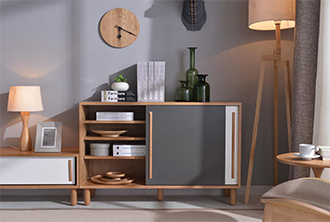

<ion-header>
    <ion-navbar color="gre" hideBackButton="true">
      <ion-title>最近视频</ion-title><span class="shipin" (click)="goChoose()">相册</span><span class="qx" (click)="edit()">取消</span>
    </ion-navbar>
  </ion-header>
  
  
  
  <ion-content padding>
  <div class="out" *ngFor='let item of arr;let idx=index'>
      <div class="came">
          
      </div>
      <div class="came">
          
      </div>
      <div class="came">
          
      </div>
      
  </div>
  <ion-list>
  
  <ion-footer class="foo" >
  <button class="button button-positive"  (click)="chengGong()"><span>确定</span></button> 
  </ion-footer>
  